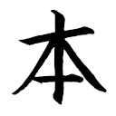

ハイパーリンク
|  | Japanisch Grund- und Intensivkurs Japanisch über die Grammatik lernen |
| Jisho.org Jisho is a powerful Japanese-English dictionary. It lets you find words, kanji, example sentences and more quickly and easily. |
|
| Ultra Handy Japanese Verb Conjugator The only site on the web featuring Japanese verb conjugation pictures of alien monsters. |
|
|
|
楽しい Japanese 楽しい Japanese is a site dedicated to making learning the Japanese language a fun and enjoyable experience for you. |
|
|
NihongoDera The only Japanese language reference you need |